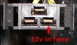
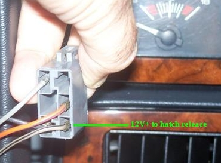

Go Home
Site Map
Go Home
Site Map
Fiero Power Trunk Release
The Power Trunk Release option appears to be one of very few dealer installable options for Fiero. It consists of 4 parts, a switch with bezels, new deck lid wiring, the release solenoid, and a relay. All other wiring for this option is factory installed in the car. This Option can easily be transferred from one car to another. This option appears to be a single package for 86, 87, and 88, years that have the "ajar" switch on the latch. I think there is a different version of it for 1984 and another for 85, which have the "ajar" switch on the trunk lip, but installation appears similar.
Warnings:
There aren't really any for this project. There are no modifications to the factory wiring. Disconnect the courtesy light fuse, and you won't have to reset the radio. If you're uncomfortable with just the fuse, then feel free to disconnect the battery. Other wise just use commonsense and you'll be fine. All parts are plug & play for this project. No jacking of the car is required.
The weather pack connector has a tie down clip that is often broken. Make sure that the weather pack connector and the deck lid harness are tied well away from the exhaust manifold and PTO belt.
Parts:
Pontiac likely discontinued new parts. Even though I wrote this article like you could get them.
For those of you pulling used parts... You need the deck latch with solenoid. The lid wiring harness, The dash switch with the right bezel for your car, AND the relay! The relay is located under the dash directly below the tachometer position in a clip on the right side of the steering column supports. If you are doing used parts, grab the horn relay from the "convenience center" as well. It's the square can next to the blue chime unit. If nothing else you now have a spare relay that will work for the horn or the trunk.
Time:
This whole project can be completed in under 45 minutes. If used parts are installed, under 1.5 hours, including the time to pull the parts. My first try at this took an hour... I didn't get the relay when I pulled the parts and had to figure out why it didn't work.
Tools:
- 7mm nut driver. (switch mounting screws)
- 10mm wrench of your favorite type. (trunk latch bolts)
- T15 Torx screw driver. (bezel mounting screws)
- Small flat blade screw driver. (helps to release the connector latches.)
Installation:
Remove the courtesy light fuse. It is labeled "CTSY LID." This circuit is powered by the courtesy (dome) light fuse which is hot at all times.
Select the appropriate switch bezel for the car, and attach it to the switch. This is decided by whether or not the car has a Rear Window Defogger. Remove the 4 screws holding in the current bezel, and if need be the 2 screws for the rear window defogger switch. (If you got a used switch, then you hopefully got the right bezel for your car. And a spare defog switch if your car has that. ;) )
Reach into the dash opening, and pull out the connector for the new release switch. Plug the connector into the switch and reattach the bezel to the dash.
Remove the deck latch from the lid. Disconnect the small connector from the switch. (The little switch is for the "ajar" light amongst other things.) Unplug the "weather pack" connector from the deck lid harness that is located next to the right side hinge. Pull out the lid wiring.
Slide the tube on the new harness towards the small end. Pull the extra wire for the solenoid back through the tube until it's connector is close to the tube. Slide the new harness into the lid opening. Push gently until it's all the way in. If it sticks back off and try again. Try turning the tube a bit. The lid is designed to guide the tube directly to the latch. The tube makes this Very easy. It will only go in the correct way although you may have to fidget with the 2 connectors a bit to get them started. The hole by the hinge is a snug fit.
Pull the ends of the harness out of the opening for the latch and the seat the grommet near the weather pack connector. The grommet probably won't stay seated. I've yet to see one that wasn't hanging out.
Remove the knockout from the deck lid lock, and attach the solenoid that is held by 1 self-threading screw. No adjustment is required for the solenoid. (If you are installing used parts, just take the whole latch with the solenoid.) Plug in the 2 connectors and reinstall the latch being careful not to pinch any wires. Adjustment of the latch will require some trial, but a good start it to try to align the marks on the latch, with the washers on the bolts.
Plug in the weather pack connector on the lid harness. If the connector is hanging free, make sure you tie it up so it will not hit the exhaust manifold. There should be a clip for it, but it often gets broken.
Plug the relay into the connector under the dash. The connector is located below the new switch. It has yellow/white wire, gray/black, and black/white, wires on it. It is usually taped to the dash harness. (Note: This color code DOES change from year to year. The location of the socket has always been the same so far.)
Reinsert the courtesy light fuse.
Push the latch release button. It should operate immediately.
Problems:
There are only 3 parts that could likely go bad, the switch, the relay, and the solenoid/latch hardware. ((Note: The color code is valid for a 1987 car. It does change in other years.))
To test the relay, remove it from the socket, and jumper the gray and black (the 2 small) wires in the socket. Press the switch. If it operates the solenoid then the relay is bad or the interlock circuit is open. The relay is part of the safety interlock circuit, so you probably should replace it. If the OEM relay is unavailable, a Horn relay can be used. The horn relay is functionally the same, but is heavier duty.
If the solenoid did not fire, open the lid, and check the weather pack connector and the lid harness. If these appear OK, then take the latch off the lid. Hold it against a grounded object, and jumper the solenoid connector to 12v. If it still won't trip, then the solenoid is bad. If the solenoid did release the latch check the switch. Sometimes the switch contacts get cruddy and won't pass enough juice to fire the solenoid.
If the solenoid fires, but the latch won't open, the latch, or solenoid needs replacement. Visual inspection of the solenoid after removing it from the latch should determine which is broken. Head to the wrecking yard, and just get the whole assembly.
Interlock:
The relay used in this circuit is to provide a way to safety interlock the circuit. In this case Pontiac only wanted to prevent the lid being opened while the car was moving.
The trunk latch is interlocked thru either the Park/Neutral switch on automatics or the hand brake on the manual transmission cars. When the connector is held like this | _-_ |, the lower left terminal should be grounded when the car is in park (auto) or the hand brake pulled (stick).
Some people tell me that the trunk latch operates even without pulling the hand brake in stick cars. This should not happen according to GM schematics. This could be yet another factory wiring error or defects in the hand brake switch wiring. I can't determine if you should be worried about this or not.
Security:
The fact that the lid release is powered at all times raises a security problem. It is possible for a rod, or stick, to be inserted over the window to open the deck lid. There are a number of ways to defeat this problem:
Option 1: Cut the orange wire feeding the switch. Cap the hot side of the orange wire. Splice the switch side to a Key On hot wire. (According to my schematics, the orange wire is consistent for all years.) The bottom left wire on the defog switch works for this. (This was the option I chose for my car. See part 2.)
Option 2: Cut the Orange wire feeding the switch. Install a second false switch in the line. The rear window defogger switch could be used for this in cars without that option.
Option 3: If you only want an occasional way to disable the switch, unplug the relay, or unplug the solenoid.
Option 4: I hate to cut the factory wiring unless absolutely required to fix something. Fortunately the lid of the relay can be removed. You can add a small switch in series to the coil winding and put the lid back on. This way if you ever want to undo your change you can just put in a new relay.
Options 1 is the way this option works on many other cars. Option 2 was suggested by a reader at Pennock's Fiero Forum. Options 3 & 4 are just a personal observation.
Fiero Power Trunk Emergency Access
WARNING: This is an EMERGENCY procedure only. The procedure bypasses all system fuses. If there is a short circuit you will dump full supply current to ground. This can damage both the power supply and the vehicle electrical system.
NOTE: This should work for all 85+ Fiero. It does not work for 84.
- Locate the trunk relay under the dash and remove it. The OEM location is a clip on the right side of the steering column support framing.
- Position
the relay socket like this:
 - Connect +12VDC to the terminal on the bottom right. Ground the supply to any convenient spot on the car frame.
84 method
1984 Fiero does not use a relay, uses a different wiring and fuse, and normally needs to have the ignition switch On to work.
Use 12v source between ground and trunk switch.

Soucre: 2002z28ssconv in this thread.
Note: Picture is for later year. It will still work.